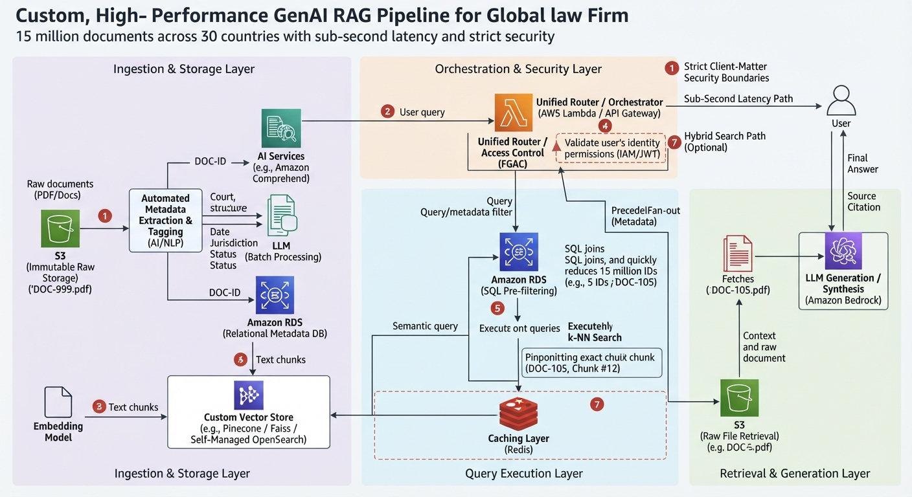

Real-World Scenario: A Global Law Firm handling 15 million documents across 30 countries, requiring sub-second queries and strict client-matter security.

To handle a massive enterprise legal environment, a single vector database isn't enough. We use a multi-tiered pipeline combining managed services and custom stores.
1. Bedrock Knowledge Bases (Managed Public Store)
Real-World Example: Public court rulings of the US Supreme Court or standard federal tax codes.
2. Amazon OpenSearch Service + Neural Plugin (Confidential & Hybrid Search)
Hybrid Search Example: Combining semantic vector search with exact keyword matching (BM25). If a lawyer searches for exact statute code "Section 10b-5", keyword search ensures the exact code match is caught, while semantic search catches related phrasing like "fraudulent stock market practices".
3. RDS + S3 + Custom Vector Store (Relational & Raw File Pipeline)
Real-World Example (M&A Contract Lookup): When an attorney queries, "Find 2024 contracts from the Delaware Court of Chancery concerning an indemnification cap dispute," this custom pipeline operates through three synchronized stages:
RDS Pre-Filtering: The system queries RDS first, using structured metadata (Court = Delaware Court of Chancery, Year = 2024) to instantly narrow down 15 million documents to just 5 matching Document IDs.
Custom Vector Store Search: Pinecone or Faiss performs high-speed vector math only on those 5 shortlisted IDs to pinpoint the exact paragraph or chunk where the semantic concept of an "indemnification cap dispute" occurs (DOC-105, chunk #12).
S3 File Retrieval: Once the exact location is identified, S3 fetches the original, immutable PDF file (DOC-105.pdf) and serves it to the attorney for review.
Component Breakdown:
4. Amazon DynamoDB (Real-Time Regulatory Updates)
Real-World Example: Tracking whether compliance regulation Rule 10b-5 was amended or updated this morning. DynamoDB doesn't store 15 million documents; it only stores lightweight active status keys and quick configuration flags for instant lookups.
Vector search alone can return semantically similar results that are legally dead or jurisdictionally irrelevant.
The "Overturned Case" Real-World Example (Cross-Reference Graphs): Suppose semantic search finds a case that matches 100% with a breach-of-contract query. However, the RDS relationship graph indicates: "This case was overturned by the Supreme Court last year." The metadata framework instantly blocks this result, preventing legal malpractice.
To achieve sub-second queries across 15 million documents and 30 countries:
In an enterprise law firm, client confidentiality is absolute.
Real-World Example: A lawyer in the London office working on Client X must never see secret documents belonging to Client Y in New York, even if they sit in the same OpenSearch cluster.